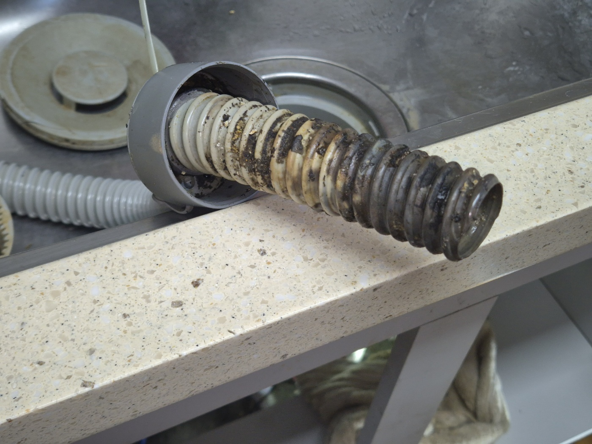
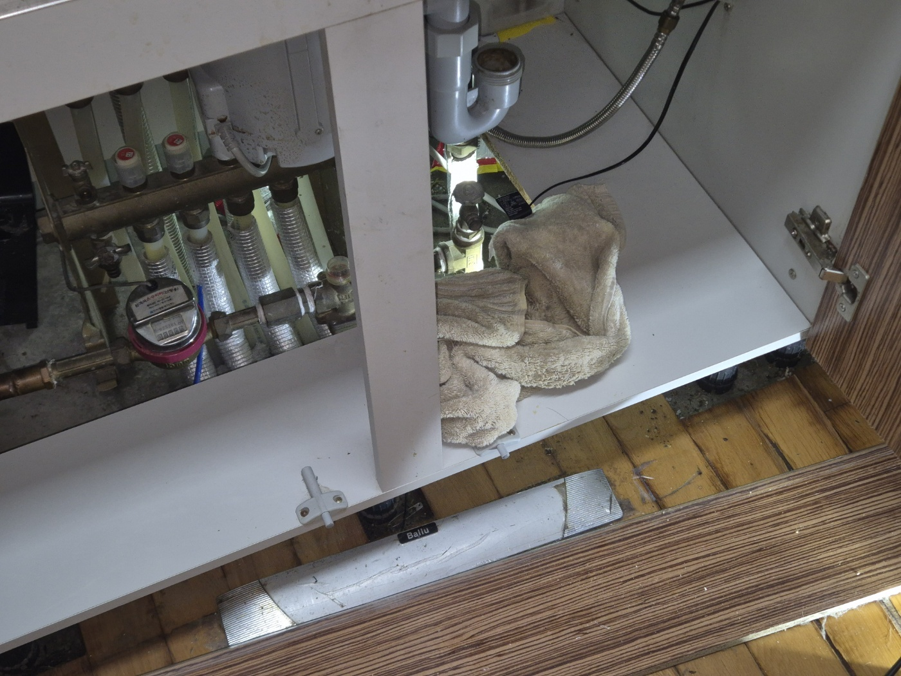
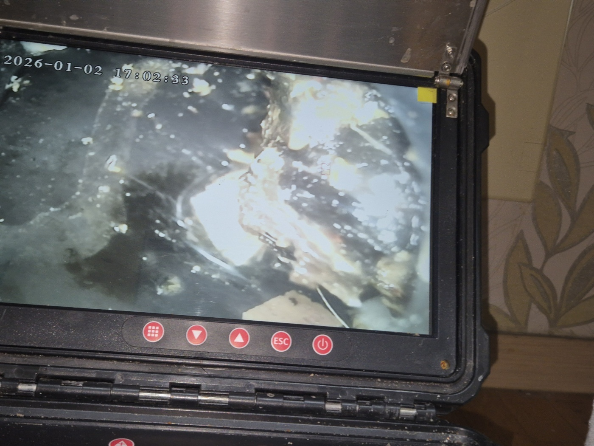

안녕하세요.. 고고고 설비입니다.. 오늘은 평택시 용이동에서 싱크대막힘 신고를 받고 다녀온 현장입니다. 설거지물이 며칠 전부터 천천히 빠지더니 오늘 아침부터는 아예 고여서 내려가질 않는다고 하셨어요. 아이 키우는 집이라 설거지가 밀리면 안 된다고 걱정이 크셨습니다.
도착해서 바로 싱크대 하부장을 열어 배관 호스부터 분리해봤습니다. 호스 안쪽 주름을 들여다보니 골마다 기름때와 찌든 이물질이 켜켜이 껴서 통로가 거의 반으로 줄어든 상태였어요.. 손으로 눌러봐도 딱딱하게 굳어있을 정도였고, 오래된 기름 냄새도 살짝 올라오더라고요.
호스만 문제인지, 안쪽 배관까지 문제인지 확인하려고 하부장 안쪽 계량기와 배관 연결부도 함께 열어봤습니다. 좁은 공간에 몸을 낮추고 랜턴으로 구석구석 비춰가며 살펴봤는데, 연결 부위 여기저기에 물때가 남아있긴 했지만 다행히 파손이나 큰 손상은 없었어요.

배관을 다시 조립하기 전에 내시경 카메라를 넣어서 안쪽까지 한 번 더 확인했습니다. 화면으로 보니 이물질이 한쪽으로 뭉쳐서 좁은 틈만 겨우 남기고 물길을 막고 있는 게 보였어요.

뭉쳐있던 이물질을 걷어내고 호스 안쪽까지 하나하나 닦아낸 뒤 다시 조립했습니다. 조립하면서 연결 부위 패킹도 함께 점검해서 헐거워진 곳은 다시 조여줬어요.
작업을 마치고 물을 내려보니 이전과 다르게 배수가 시원하게 잘 빠지는 걸 확인했습니다. 소리도 훨씬 시원해지고, 설거지물이 고이지 않고 바로바로 내려가는 걸 눈으로 직접 확인시켜드렸어요.
싱크대 배관 호스는 구조상 주름이 많아서 기름기와 음식물 찌꺼기가 골마다 쌓이기 쉽습니다. 설거지 후에 뜨거운 물을 한 번씩 흘려보내주시고, 기름기가 많은 요리를 한 날은 특히 신경 써서 헹궈주시는 것만으로도 이런 막힘을 예방하는 데 큰 도움이 됩니다.
고고고 설비는 주택, 아파트, 원룸, 상가, 공장의 생활 하수 오수 배관을 관리해 주는 업체입니다. 고고고 설비에 전화 주시면 친절상담 정확한 진단 확실한 해결로 보답해 드리겠습니다!!